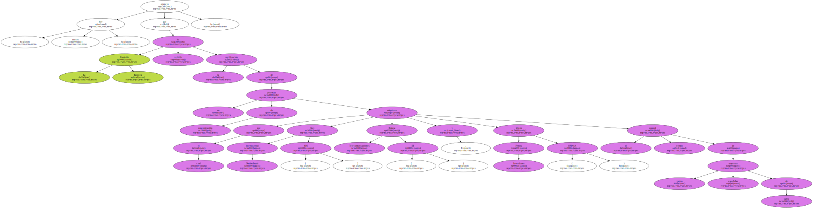
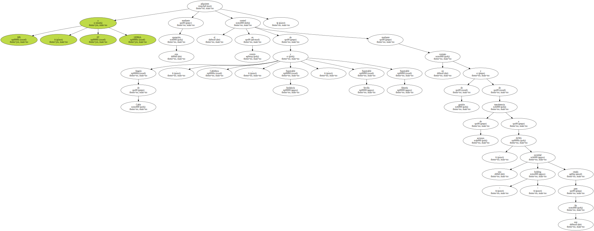
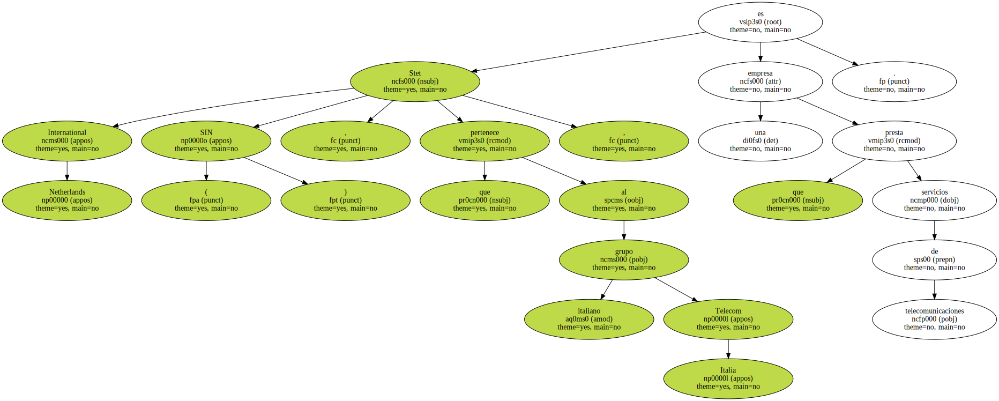
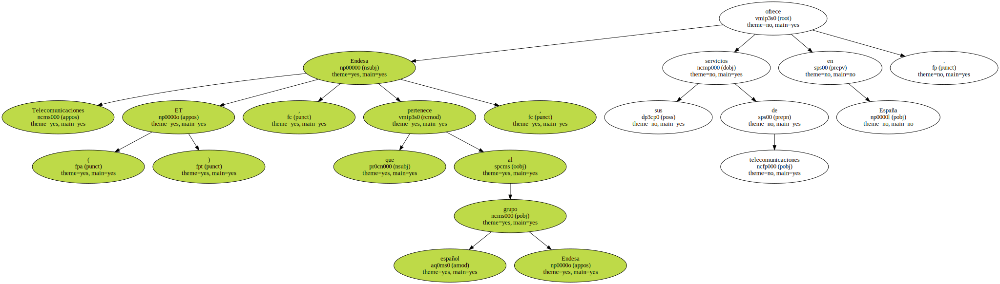
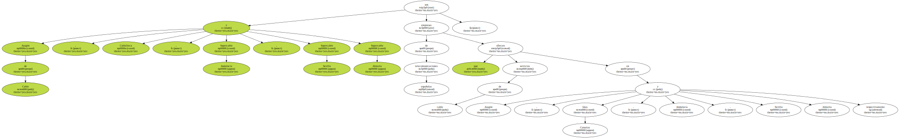
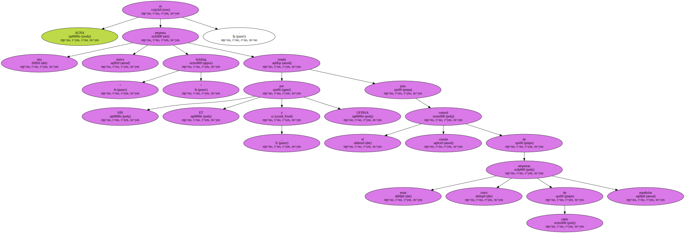
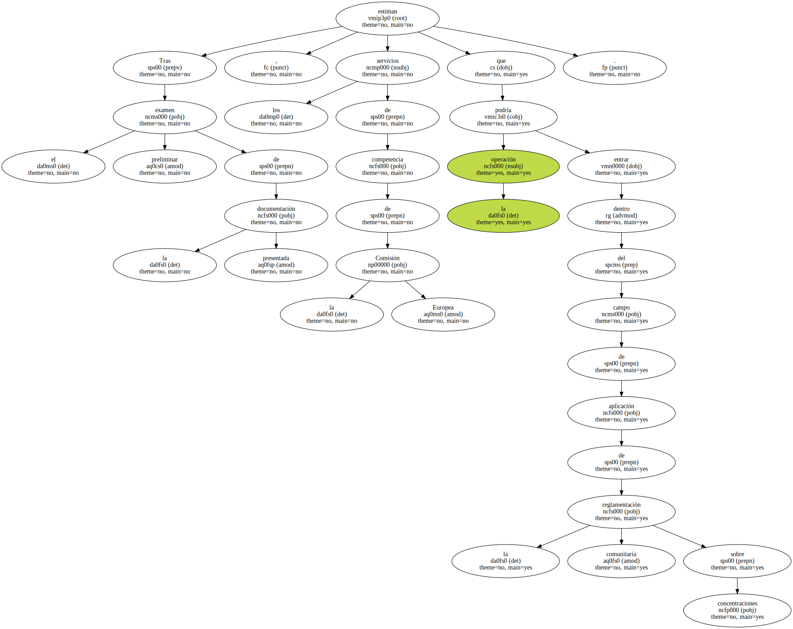
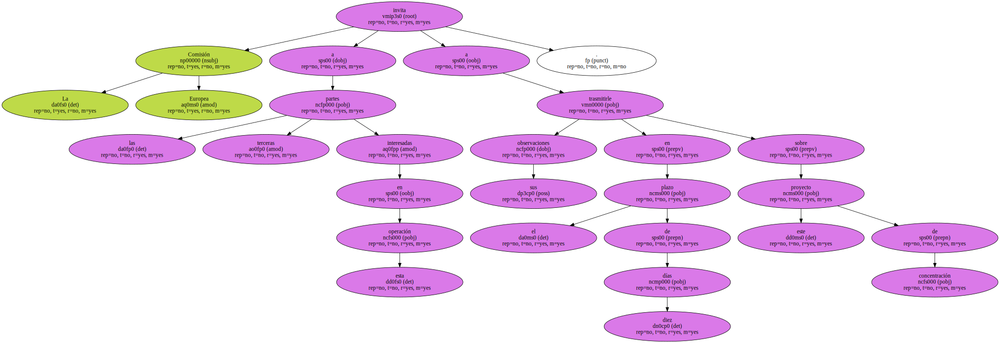

La Comisión Europea anunció hoy , martes , que ha recibido la notificación de un proyecto de concentración por el cual Stet International Netherlands ( SIN ) , Endesa Telecomunicaciones ( ET ) y Unión Fenosa Inversiones ( UFINSA ) adquieren el control común de varias empresas españolas de cable.
SIN , ET y UFINSA adquieren mediante esta operación el control en común de Aragón de Cable , Cablelteca , Supercable Andalucía , Supercable Sevilla y Supercable Almería mediante un contrato de gestión y de transferencia de acciones a AUNA , una sociedad " holding " creada para este fin.
Stet International Netherlands ( SIN ) , que pertenece al grupo italiano Telecom Italia , es una empresa que presta servicios de telecomunicaciones.
Endesa Telecomunicaciones ( ET ) , que pertenece al grupo español Endesa , ofrece sus servicios de telecomunicaciones en España.
Unión Fenosa Inversiones ( UFINSA ) es una empresa del grupo español Unión Fenosa que ofrece servicios de asesoría , ingeniería , telecomunicaciones , industria , explotación de minas e inmobiliaria.

Aragón de Cable , Cablelteca , Supercable Andalucía , Supercable Sevilla y Supercable Almería son empresas de telecomunicaciones españolas que ofrecen servicios de cable en Aragón , Islas Canarias , Andalucía , Sevilla y Almería respectivamente.
AUNA es una nueva empresa " holding " creada por SIN , ET y UFINSA para el control común de estas cinco empresas de cable españolas.
Tras el examen preliminar de la documentación presentada , los servicios de competencia de la Comisión Europea estiman que la operación podría entrar dentro del campo de aplicación de la reglamentación comunitaria sobre concentraciones.
La Comisión Europea invita a las terceras partes interesadas en esta operación a trasmitirle sus observaciones en el plazo de diez días sobre este proyecto de concentración.
